A long-term goal in CT imaging is to achieve fast and accurate 3D reconstruction from sparse-view projections, thereby reducing radiation exposure, lowering system cost, and enabling timely imaging in clinical workflows.
Recent feed-forward approaches have shown strong potential toward this overarching goal, yet their results still suffer from artifacts and loss of fine details.
In this work, we introduce Iterative Latent Volumes (ILV), a feed-forward framework that integrates data-driven priors with classical iterative reconstruction principles to overcome key limitations of prior feed-forward models in sparse-view CT reconstruction.
At its core, ILV constructs an explicit 3D latent volume that is repeatedly updated by conditioning on multi-view X-ray features and the learned anatomical prior, enabling the recovery of fine structural details beyond the reach of prior feed-forward models.
In addition, we develop and incorporate several key architectural components, including an X-ray feature volume, group cross-attention, efficient self-attention, and view-wise feature aggregation, that efficiently realize its core latent volume refinement concept.
Extensive experiments on a large-scale dataset of approximately 14,000 CT scans demonstrate that ILV significantly outperforms existing feed-forward and optimization-based methods in both reconstruction quality and speed.
These results indicate that ILV effectively learns structural priors to achieve accurate and consistent CT reconstructions under sparse-view conditions, advancing the feasibility of fast and accurate sparse-view CT reconstruction for practical use in clinical settings.
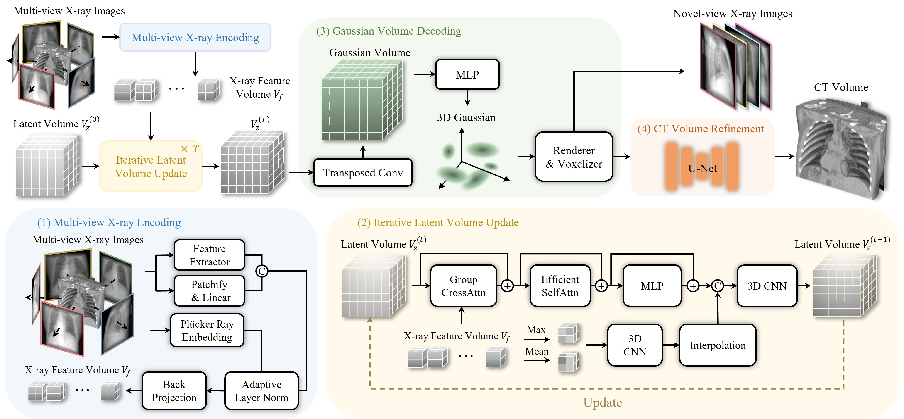
Overview of the proposed ILV. Given multi-view X-ray images, ILV reconstructs a 3D CT volume or synthesizes novel-view projections. The overall network consists of four stages: (1) Multi-view X-ray image encoding, (2) Latent volume update, (3) Gaussian volume decoding, and (4) CT volume refinement (For more details, please refer to our paper!)
Comparison with traditional and feed-forward methods
| Type | Method | Time ↓ | 6-View | 8-View | 10-View | |||
|---|---|---|---|---|---|---|---|---|
| PSNR↑ | SSIM↑ | PSNR↑ | SSIM↑ | PSNR↑ | SSIM↑ | |||
| Traditional | FDK | 0.23s | 12.79 | 0.122 | 14.58 | 0.145 | 14.75 | 0.166 |
| ASD-POCS | 1m 32s | 22.48 | 0.661 | 23.57 | 0.695 | 24.37 | 0.721 | |
| SART | 2m 48s | 23.21 | 0.689 | 24.26 | 0.712 | 25.06 | 0.733 | |
| 2D FF | FreeSeed | 4.5s | 28.81 | 0.793 | 29.61 | 0.833 | 30.34 | 0.837 |
| 3D FF | DIF-Net | 3.0s | 24.18 | 0.720 | 24.59 | 0.734 | 24.65 | 0.745 |
| DIF-Gaussian | 3.0s | 26.56 | 0.810 | 27.46 | 0.829 | 27.88 | 0.837 | |
| ILV (Ours) | 0.59s | 33.45 | 0.922 | 33.25 | 0.919 | 33.84 | 0.924 | |
Comparison with optimization-based methods
| Method | Time ↓ | 6-View | 10-View | 24-View | |||
|---|---|---|---|---|---|---|---|
| PSNR↑ | SSIM↑ | PSNR↑ | SSIM↑ | PSNR↑ | SSIM↑ | ||
| IntraTomo | 9m 26s | 24.49 | 0.722 | 26.30 | 0.772 | 28.62 | 0.837 |
| NAF | 5m 04s | 23.74 | 0.678 | 26.17 | 0.741 | 31.34 | 0.876 |
| SAX-NeRF | 1h 35m | 24.58 | 0.754 | 26.78 | 0.794 | 33.14 | 0.919 |
| R²-Gaussian | 17m 37s | 24.54 | 0.773 | 27.26 | 0.823 | 33.29 | 0.931 |
| ILV (Ours) | 0.76s | 33.57 | 0.923 | 33.95 | 0.925 | 35.93 | 0.941 |
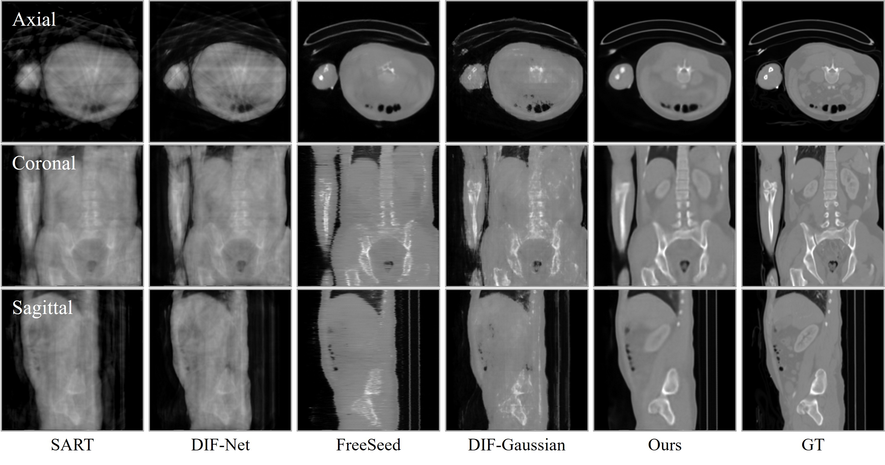
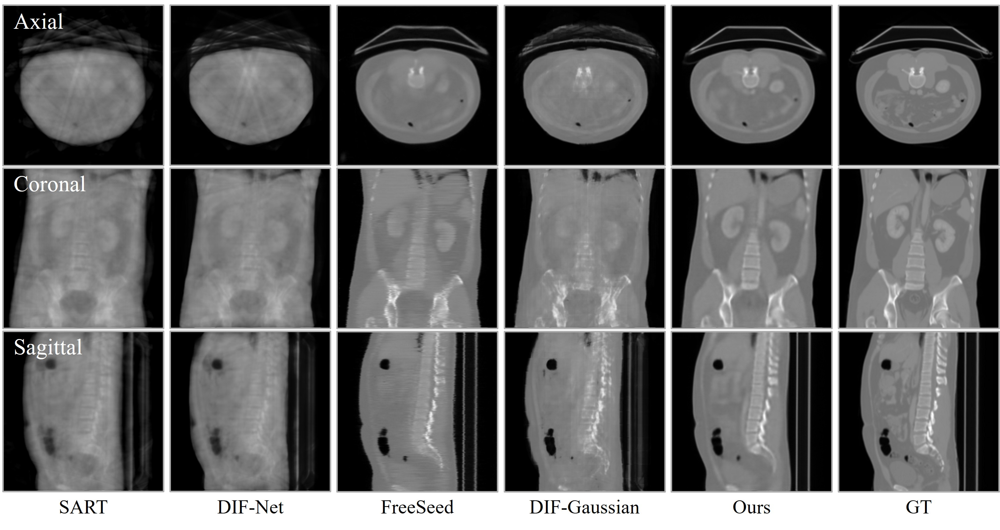
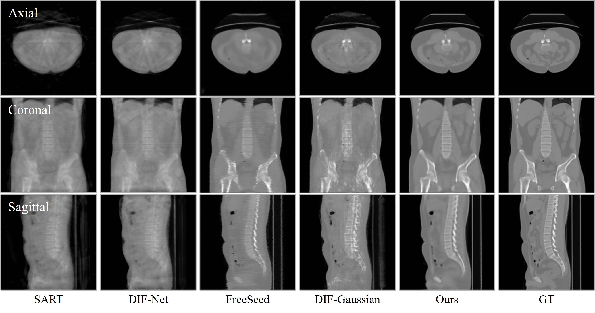
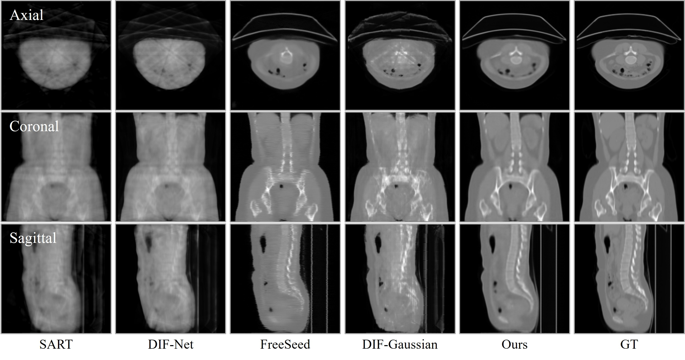
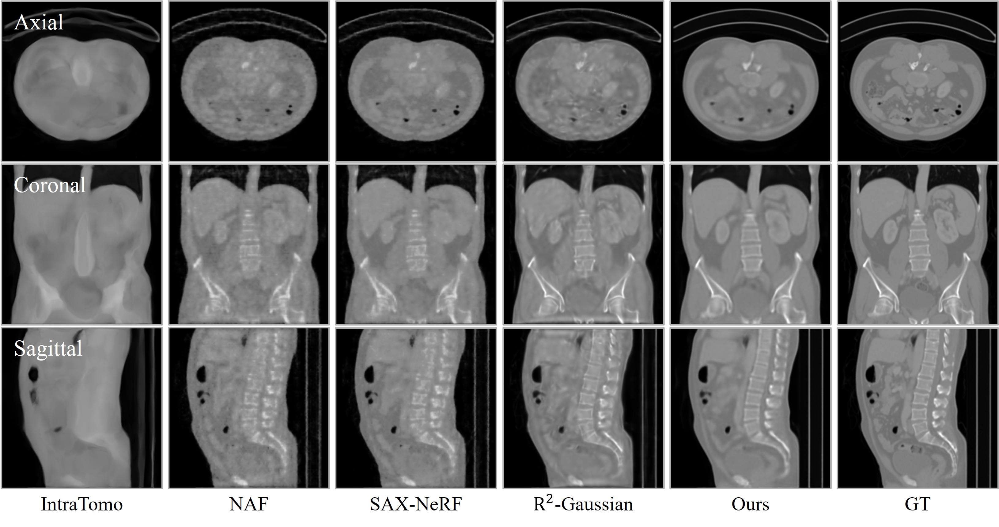
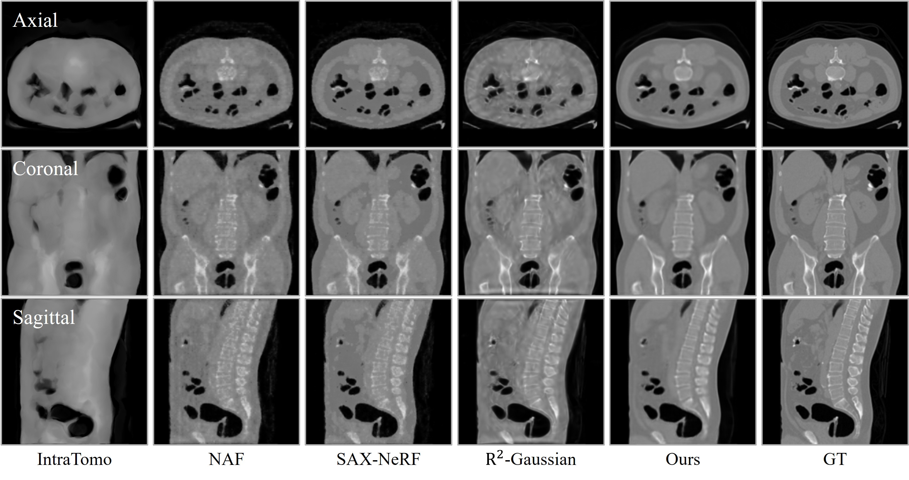
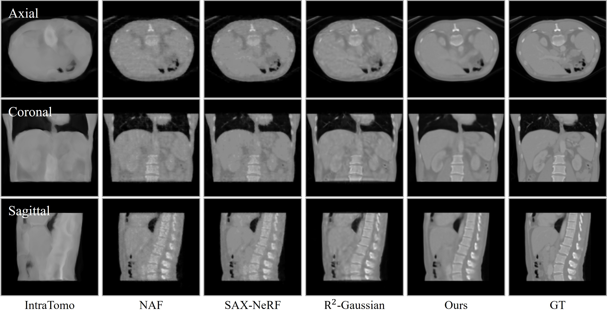
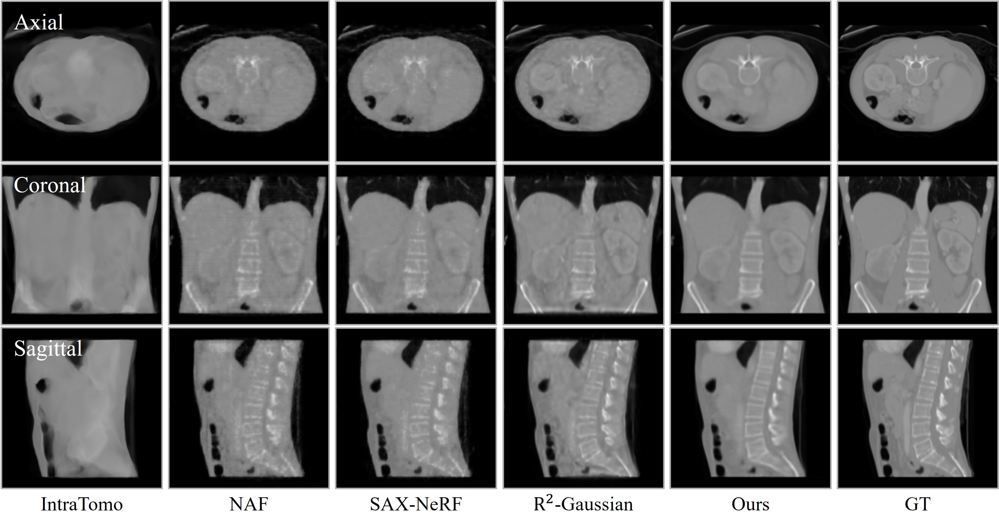
Qualitative comparison of CT reconstruction results with 10 and 24 view settings. ILV better preserves structural details and yields more consistent reconstructions across all three views.
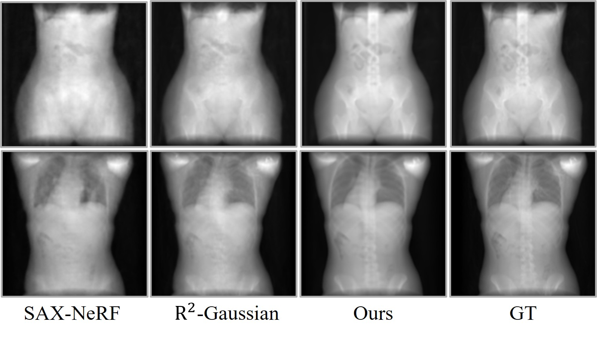
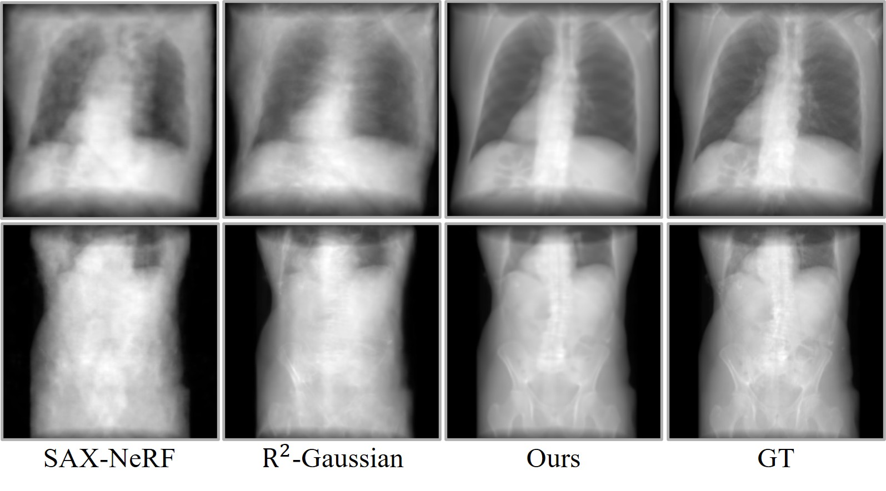
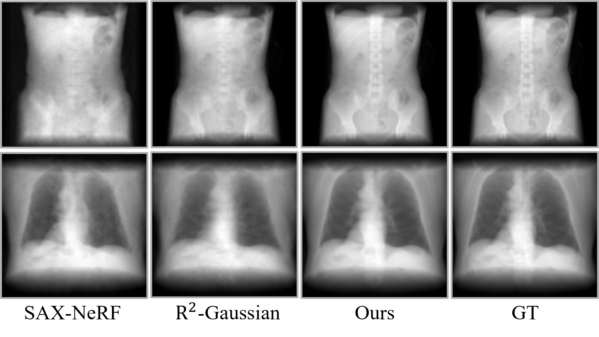
Results of X-ray Novel View Synthesis. ILV preserves structural fidelity and recovers clear object boundaries.
@misc{lee2025moirezeroefficienthighperformance,
title={Moir\'e Zero: An Efficient and High-Performance Neural Architecture for Moir\'e Removal},
author={Seungryong Lee and Woojeong Baek and Younghyun Kim and Eunwoo Kim and Haru Moon and Donggon Yoo and Eunbyung Park},
year={2025},
eprint={2507.22407}}